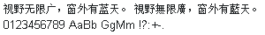

字样资料 / Sony Ericsson P802
Sony Ericsson P802 · 12点字面
10,406个映射码位，含9,587个非空CJK汉字；全部6,763个GB2312汉字非空，严格Big5编解码器所映射13,061个汉字中覆盖6,998个。繁体覆盖不全。同层95个可打印ASCII完整，空格保留字进；固定简繁样句无缺字。不宣称完整Big5、GBK或Unicode覆盖。 · 12×14 · 简体、繁体
放大观察 · 3×

原尺寸 · 1×
来源与字样信息
- 家族
- Sony Ericsson P802
- 排版说明
- 两行固定样文使用实际简／繁Unicode及同层原生ASCII。保留每字advance、左右bearing、ascent与14px原生行字格；外边4px、行间4px仅为展示布局，不缩放、不补字、不裁字框。width/cellWidth为汉字字进12px，西文可不等宽；层最大宽度15px另记。
- 字符框
- 12×14 px
- 字面／墨迹
- 11×12 px
- 字符范围
- 简体、繁体
- 样本文字
- 视野无限广，窗外有蓝天。 視野無限廣，窗外有藍天。
- 拉丁样文
- 0123456789 AaBb GgMm !?:+-.
- 覆盖说明
- 10,406个映射码位，含9,587个非空CJK汉字；全部6,763个GB2312汉字非空，严格Big5编解码器所映射13,061个汉字中覆盖6,998个。繁体覆盖不全。同层95个可打印ASCII完整，空格保留字进；固定简繁样句无缺字。不宣称完整Big5、GBK或Unicode覆盖。
- 缺字
- 样文无缺字
- 样张类型
- 原生14高字格，典型汉字11×12墨迹；简体完整、繁体部分及同层ASCII。
- 风格
- 未分类
- 用途
- 设备界面
- 字形来源
- P802中国版CXC16209 R2A07固件；配套PD1内文日期2003-04-16 21:13，从PD2的ROFS目录静态读取Linnea.gdr，选择UID 0x4823。GDR版本40，直接存储原生1-bit行压缩点阵；不执行刷机程序、不矢量取模。Linnea只是资源文件名，不作为设计来源或作者证据。
- 授权状态
- 未确认开放再分发授权
- 许可说明
- 第三方公开存档不等于再分发许可。仅展示固定小样图、聚合研究报告和无字模离线脚本；不公开完整ROM、固件、GDR、BDF或任何字库子集，使用与再分发仍受原权利约束。
- 说明
- 仅收小号：典型汉字墨迹11×12、汉字字进12px、原生行字格14高。已查具名完整GB汉字基线最高与SimSun18030内嵌12点507/6763（7.497%）同形；补查Sun GBK12为52/6763（0.769%），允许±2px平移且不缩放时Dice≥0.95仅265/6763。历史索引202条记录及当前238张原生固定PNG的检查分开记录，不宣称202套独立原生字体、全目录整库去重或设计原创性。中／大号不新增。
- 获取方式
自行取得并确认有权处理匹配SHA的本地P802 PD2 ZIP、PD2或GDR；脚本只离线生成已批准小号的固定两行PNG与聚合覆盖报告。不联网、不执行固件、不输出完整字体、GDR或任何字库子集。
- 来源
- Twister 手机固件历史存档资料页
- 原生证据
说明：SHA锁定P802 ZIP/PD2/GDR，核ROFS目录、版本40、15层结构和指定UID；Unicode区段、内联8字节指标及LSB先行RLE直接解码，保留原生度量。仅支持已核输入。
source_sha256：b830cc56393523e399fcdc349f865d57fe02b4ead0fc64139eb76e035e538961
gdrVersion：40
faceUid：0x4823
mappedCharacters：10406
nonblankCjk：9587
gb2312Han：6763
big5Han：6998
printableAscii：95
ascent：11
layerMaxWidth：15
typicalHanAdvance：12
typicalInkOnly：True
big5ExpectedHan：13061
查看原生设计来源
字体使用与再分发按原来源许可执行。